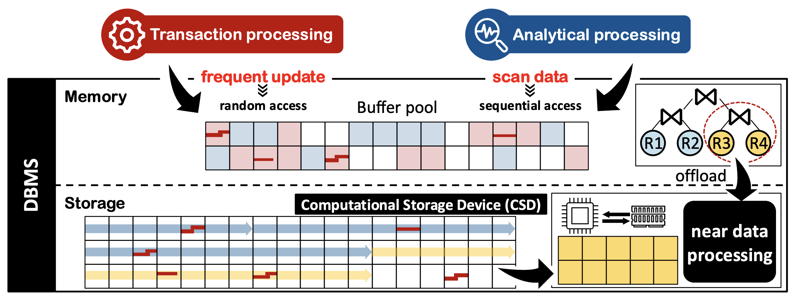
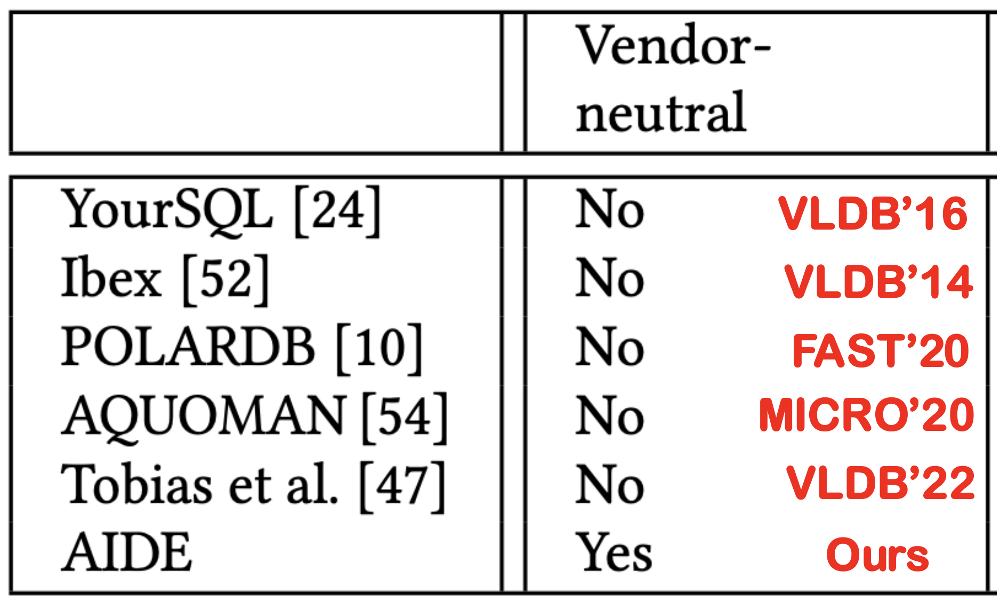
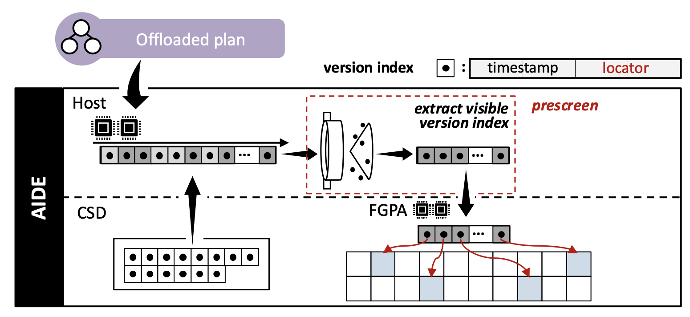
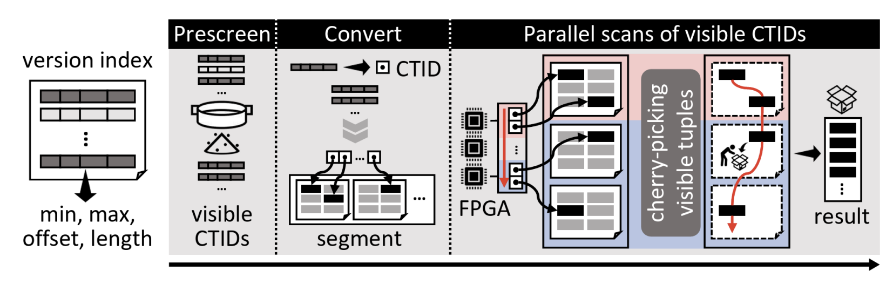
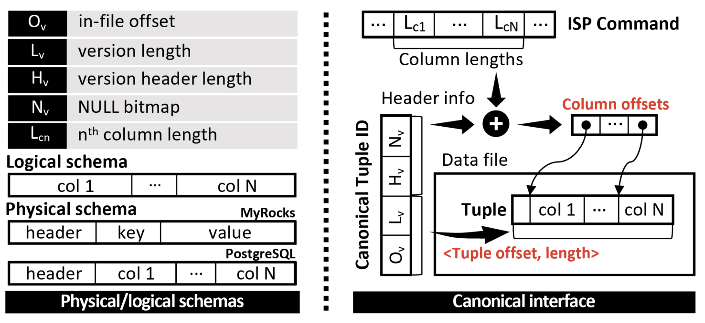

<!DOCTYPE html>
<html><head><title>11. Hardware-accelerated Query Processing (Bigdata and Knowledge Management Systems 2, SNU GSDS)</title><meta charSet="utf-8"/><meta name="viewport" content="width=device-width, initial-scale=1.0"/><meta property="og:title" content="11. Hardware-accelerated Query Processing (Bigdata and Knowledge Management Systems 2, SNU GSDS)"/><meta property="og:description" content="서울대학교 데이터사이언스대학원 정형수 교수님의 &amp;quot;빅데이터 및 지식 관리 시스템 2&amp;quot; 강의를 필기한 내용입니다. 목차 완성되지 않은 강의록 사진이랑 보충 설명 넣고, AIDE 는 별도의 논문 리뷰 작물로 분리할 계획입니다. AIDE (VLDB’23) § NDP 는 아주 큰 개념 Storage 로 가면 ISP (In-Storage Processing) 이 되고 Memory 로 가면 PIM (Process In Memory) 가 된다."/><meta property="og:image" content="https://mdg.haeramk.im/static/og-image.png"/><meta property="og:width" content="1200"/><meta property="og:height" content="675"/><link rel="icon" href="../../../../../static/icon.png"/><meta name="description" content="서울대학교 데이터사이언스대학원 정형수 교수님의 &amp;quot;빅데이터 및 지식 관리 시스템 2&amp;quot; 강의를 필기한 내용입니다. 목차 완성되지 않은 강의록 사진이랑 보충 설명 넣고, AIDE 는 별도의 논문 리뷰 작물로 분리할 계획입니다. AIDE (VLDB’23) § NDP 는 아주 큰 개념 Storage 로 가면 ISP (In-Storage Processing) 이 되고 Memory 로 가면 PIM (Process In Memory) 가 된다."/><meta name="generator" content="Quartz"/><link rel="preconnect" href="https://fonts.googleapis.com"/><link rel="preconnect" href="https://fonts.gstatic.com"/><link href="../../../../../index.css" rel="stylesheet" type="text/css" spa-preserve/><link href="https://cdn.jsdelivr.net/npm/katex@0.16.0/dist/katex.min.css" rel="stylesheet" type="text/css" spa-preserve/><link href="https://fonts.googleapis.com/css2?family=IBM Plex Mono&amp;family=Gowun Batang:wght@400;700&amp;family=Gowun Dodum:ital,wght@0,400;0,600;1,400;1,600&amp;display=swap" rel="stylesheet" type="text/css" spa-preserve/><script src="../../../../../prescript.js" type="application/javascript" spa-preserve></script><script type="application/javascript" spa-preserve>const fetchData = fetch(`../../../../../static/contentIndex.json`).then(data => data.json())</script></head><body data-slug="gardens/database/originals/bkms02.spring.2025.gsds.snu.ac.kr/lectures/11.-Hardware-accelerated-Query-Processing"><div id="quartz-root" class="page"><div id="quartz-body"><div class="left sidebar"><h1 class="page-title "><a href="../../../../..">Madison Digital Garden</a></h1><div class="spacer mobile-only"></div><div class="search "><div id="search-icon"><p>Search</p><div></div><svg tabIndex="0" aria-labelledby="title desc" role="img" xmlns="http://www.w3.org/2000/svg" viewBox="0 0 19.9 19.7"><title id="title">Search</title><desc id="desc">Search</desc><g class="search-path" fill="none"><path stroke-linecap="square" d="M18.5 18.3l-5.4-5.4"></path><circle cx="8" cy="8" r="7"></circle></g></svg></div><div id="search-container"><div id="search-space"><input autocomplete="off" id="search-bar" name="search" type="text" aria-label="Search for something" placeholder="Search for something"/><div id="results-container"></div></div></div></div><div class="darkmode "><input class="toggle" id="darkmode-toggle" type="checkbox" tabIndex="-1"/><label id="toggle-label-light" for="darkmode-toggle" tabIndex="-1"><svg xmlns="http://www.w3.org/2000/svg" xmlnsXlink="http://www.w3.org/1999/xlink" version="1.1" id="dayIcon" x="0px" y="0px" viewBox="0 0 35 35" style="enable-background:new 0 0 35 35;" xmlSpace="preserve"><title>Light mode</title><path d="M6,17.5C6,16.672,5.328,16,4.5,16h-3C0.672,16,0,16.672,0,17.5    S0.672,19,1.5,19h3C5.328,19,6,18.328,6,17.5z M7.5,26c-0.414,0-0.789,0.168-1.061,0.439l-2,2C4.168,28.711,4,29.086,4,29.5    C4,30.328,4.671,31,5.5,31c0.414,0,0.789-0.168,1.06-0.44l2-2C8.832,28.289,9,27.914,9,27.5C9,26.672,8.329,26,7.5,26z M17.5,6    C18.329,6,19,5.328,19,4.5v-3C19,0.672,18.329,0,17.5,0S16,0.672,16,1.5v3C16,5.328,16.671,6,17.5,6z M27.5,9    c0.414,0,0.789-0.168,1.06-0.439l2-2C30.832,6.289,31,5.914,31,5.5C31,4.672,30.329,4,29.5,4c-0.414,0-0.789,0.168-1.061,0.44    l-2,2C26.168,6.711,26,7.086,26,7.5C26,8.328,26.671,9,27.5,9z M6.439,8.561C6.711,8.832,7.086,9,7.5,9C8.328,9,9,8.328,9,7.5    c0-0.414-0.168-0.789-0.439-1.061l-2-2C6.289,4.168,5.914,4,5.5,4C4.672,4,4,4.672,4,5.5c0,0.414,0.168,0.789,0.439,1.06    L6.439,8.561z M33.5,16h-3c-0.828,0-1.5,0.672-1.5,1.5s0.672,1.5,1.5,1.5h3c0.828,0,1.5-0.672,1.5-1.5S34.328,16,33.5,16z     M28.561,26.439C28.289,26.168,27.914,26,27.5,26c-0.828,0-1.5,0.672-1.5,1.5c0,0.414,0.168,0.789,0.439,1.06l2,2    C28.711,30.832,29.086,31,29.5,31c0.828,0,1.5-0.672,1.5-1.5c0-0.414-0.168-0.789-0.439-1.061L28.561,26.439z M17.5,29    c-0.829,0-1.5,0.672-1.5,1.5v3c0,0.828,0.671,1.5,1.5,1.5s1.5-0.672,1.5-1.5v-3C19,29.672,18.329,29,17.5,29z M17.5,7    C11.71,7,7,11.71,7,17.5S11.71,28,17.5,28S28,23.29,28,17.5S23.29,7,17.5,7z M17.5,25c-4.136,0-7.5-3.364-7.5-7.5    c0-4.136,3.364-7.5,7.5-7.5c4.136,0,7.5,3.364,7.5,7.5C25,21.636,21.636,25,17.5,25z"></path></svg></label><label id="toggle-label-dark" for="darkmode-toggle" tabIndex="-1"><svg xmlns="http://www.w3.org/2000/svg" xmlnsXlink="http://www.w3.org/1999/xlink" version="1.1" id="nightIcon" x="0px" y="0px" viewBox="0 0 100 100" style="enable-background='new 0 0 100 100'" xmlSpace="preserve"><title>Dark mode</title><path d="M96.76,66.458c-0.853-0.852-2.15-1.064-3.23-0.534c-6.063,2.991-12.858,4.571-19.655,4.571  C62.022,70.495,50.88,65.88,42.5,57.5C29.043,44.043,25.658,23.536,34.076,6.47c0.532-1.08,0.318-2.379-0.534-3.23  c-0.851-0.852-2.15-1.064-3.23-0.534c-4.918,2.427-9.375,5.619-13.246,9.491c-9.447,9.447-14.65,22.008-14.65,35.369  c0,13.36,5.203,25.921,14.65,35.368s22.008,14.65,35.368,14.65c13.361,0,25.921-5.203,35.369-14.65  c3.872-3.871,7.064-8.328,9.491-13.246C97.826,68.608,97.611,67.309,96.76,66.458z"></path></svg></label></div></div><div class="center"><div class="page-header"><div class="popover-hint"><h1 class="article-title ">11. Hardware-accelerated Query Processing (Bigdata and Knowledge Management Systems 2, SNU GSDS)</h1><p class="content-meta ">Apr 09, 2025, 6 min read</p><ul class="tags "><li><a href="../../../../../tags/database" class="internal tag-link">#database</a></li><li><a href="../../../../../tags/originals" class="internal tag-link">#originals</a></li><li><a href="../../../../../tags/snu-bkms25s" class="internal tag-link">#snu-bkms25s</a></li></ul></div></div><article class="popover-hint"><blockquote class="callout" data-callout="info">
<div class="callout-title">
                  <div class="callout-icon"><svg xmlns="http://www.w3.org/2000/svg" width="100%" height="100%" viewBox="0 0 24 24" fill="none" stroke="currentColor" stroke-width="2" stroke-linecap="round" stroke-linejoin="round"><circle cx="12" cy="12" r="10"></circle><line x1="12" y1="16" x2="12" y2="12"></line><line x1="12" y1="8" x2="12.01" y2="8"></line></svg></div>
                  <div class="callout-title-inner"><p>서울대학교 데이터사이언스대학원 정형수 교수님의 &quot;빅데이터 및 지식 관리 시스템 2&quot; 강의를 필기한 내용입니다. </p></div>
                  
                </div>
<ul>
<li><a href="../../../../../gardens/database/originals/bkms02.spring.2025.gsds.snu.ac.kr/(SNU-GSDS)-Bigdata-and-Knowledge-Management-Systems-2" class="internal" data-slug="gardens/database/originals/bkms02.spring.2025.gsds.snu.ac.kr/(SNU-GSDS)-Bigdata-and-Knowledge-Management-Systems-2">목차</a></li>
</ul>
</blockquote>
<blockquote class="callout" data-callout="warning">
<div class="callout-title">
                  <div class="callout-icon"><svg xmlns="http://www.w3.org/2000/svg" width="100%" height="100%" viewBox="0 0 24 24" fill="none" stroke="currentColor" stroke-width="2" stroke-linecap="round" stroke-linejoin="round"><path d="m21.73 18-8-14a2 2 0 0 0-3.48 0l-8 14A2 2 0 0 0 4 21h16a2 2 0 0 0 1.73-3Z"></path><line x1="12" y1="9" x2="12" y2="13"></line><line x1="12" y1="17" x2="12.01" y2="17"></line></svg></div>
                  <div class="callout-title-inner"><p>완성되지 않은 강의록 </p></div>
                  
                </div>
<ul>
<li>사진이랑 보충 설명 넣고, AIDE 는 별도의 논문 리뷰 작물로 분리할 계획입니다.</li>
</ul>
</blockquote>
<h2 id="aide-vldb23"><a href="https://www.vldb.org/pvldb/vol16/p1480-jung.pdf" class="external">AIDE (VLDB’23)</a><a aria-hidden="true" tabindex="-1" href="#aide-vldb23" class="internal"> §</a></h2>
<ul>
<li>NDP 는 아주 큰 개념
<ul>
<li>Storage 로 가면 ISP (In-Storage Processing) 이 되고</li>
<li>Memory 로 가면 PIM (Process In Memory) 가 된다.</li>
</ul>
</li>
<li>이 ISP 로 query offloading 을 해보자.</li>
</ul>
<h2 id="the-good">The good<a aria-hidden="true" tabindex="-1" href="#the-good" class="internal"> §</a></h2>
<p></p>
<ul>
<li>일단 update 는 in-memory 에서 처리되게 냅두고, OLAP query 에서 JOIN 을 CSD 로 offloading 하면 더 좋지 않을까?
<ul>
<li>아니면 parallel 하게; JOIN 의 일부는 host 에서 하고 다른 JOIN 은 CSD 에서 처리하면 host DBMS 의 부담을 더 줄일 수 있지 않을까?</li>
</ul>
</li>
</ul>
<h2 id="the-bad">The bad<a aria-hidden="true" tabindex="-1" href="#the-bad" class="internal"> §</a></h2>
<ul>
<li>라고 생각하면 오산이다.</li>
<li>근데 여기서 당면한 첫번쨰 문제는 data format 이다: CSD 에 offloading 할 computation 이 특정 DB 에 종속되어있다면 해당 DB 에서밖에 사용하지 못한다.
<ul>
<li>다른 DB 에서 사용하려면 이 logic 을 다른 DB layout 으로 바꿔야 하는데 이건 맨땅에 해딩하는거나 다름이 없다.</li>
</ul>
</li>
</ul>
<p></p>
<ul>
<li>가령 위의 그림을 보면 지금까지 나온 모든 CSD 관련 논문들이 전부 vendor-neutral 하지 않다는 것을 알 수 있다.</li>
<li>두번째 문제는 CSD 의 computation power 가 별로이고, CSD 내부에서도 random IO 는 여전히 느리기 때문에 CSD 내에서 version traversal 을 하는 것은 매우 별로라는 것이다.</li>
</ul>
<h2 id="the-ugly">The ugly<a aria-hidden="true" tabindex="-1" href="#the-ugly" class="internal"> §</a></h2>
<ul>
<li>그래서 첫번째 문제는 canonical layout 와 vendor-neutral operation 을 정의하여 구현하고, 다른 DB 에서도 사용할 수 있게 하여서 해결한다.</li>
<li>그리고 두번째 문제는 <em>Prescreen</em> 이다: host library 에서 봐야 할 version 을 미리 결정해서 CSD 에 던져 주고, CSD 에서는 얘네들만 읽게 하면 CSD 내부에서의 version traversal 을 제거할 수 있다.</li>
</ul>
<h3 id="prescreening">Prescreening<a aria-hidden="true" tabindex="-1" href="#prescreening" class="internal"> §</a></h3>
<ul>
<li>우선 <em>Prescreening</em> 이 뭔지부터 알아보자.</li>
<li>간단히 말하면, visibility 정보만을 담은 것을 빌드한 후, CSD 에 던지기 전에는 query 의 timestamp 를 이용해 여기에서 읽어야 하는 version 들만을 채로 걸러서 (<em>Sift</em>) CSD 에 던진다.</li>
</ul>
<p></p>
<ul>
<li>구체적으로는,
<ul>
<li>각 version 에 대해서 visibility information (timestamp) 와 이 version 이 있는 위치 (location) 을 묶은 자료구조인 <em>Version Index</em> 를 만들고,
<ul>
<li>당연히 visibility information 은 Min, Max timestamp 로 구성되고</li>
<li>Location 은 파일 내에서 version 에 대한 offset 과 size 로 구성된다.</li>
</ul>
</li>
<li>모든 version 들에 대해 빌드해 <em>Version Index Table</em> 을 빌드한다.
<ul>
<li>Postgres 에서는 segment 별로 build 되어 segment 랑 같이 저장되고,</li>
<li>MyRocks 에서는 SST 별로 build 되어 SST 랑 같이 저장된다고 한다.</li>
</ul>
</li>
<li>그리고, Query plan 의 query timestamp 를 이용해서, 이 <em>Version Index Table</em> 내에서 어떤 version 들을 읽어야 하는지 한번 채로 거른다. 이 과정을 <em>Prescreen</em> 이라고 한다.
<ul>
<li>즉, 이것 자체가 snapshot 이 되는 셈이다.</li>
</ul>
</li>
<li>그리고 CSD 내에서는 이 채로 거른 <em>Version Index</em> 들을 이용해 version traversal 없이 데이터에 접근한다.</li>
</ul>
</li>
</ul>
<p></p>
<ul>
<li>실제로는 위와 같이 최적화하여 실행한다.
<ul>
<li>저 <em>Prescreen</em> 된 <em>version index</em> 들을 sorting 하여 읽어야 하는 구역을 disjoint 하게 구분한 뒤,</li>
<li>CSD 내의 각 core 가 parallel 하게 scan 한다.</li>
</ul>
</li>
<li>또한, latency hiding 을 위해서 data file 을 CSD 내에서 사용할 수 있게 하기 위해 flush 하는 동안 prescreening 을 진행한다고 한다.</li>
</ul>
<h2 id="canonical-interface">Canonical Interface<a aria-hidden="true" tabindex="-1" href="#canonical-interface" class="internal"> §</a></h2>
<p></p>
<ul>
<li>이것은 별거 없다.</li>
<li>위에서는 version index 에 location 이 들어간다고 했는데, 구체적으로는 offset, version len, header len, nullmap 으로 구성된 <em>Canonical Tuple ID</em> (<em>CTID</em>) 가 들어간다.</li>
<li>따라서 이놈을 보면 일단 version 의 전체 length 와 nulll 정보를 알 수 있다.</li>
<li>그리고, ISP command 로 각 column 들의 길이를 알려준다.</li>
<li>이것을 조합하면, 그냥 byte stream 일 뿐인 tuple 을 해석할 수 있게 된다.</li>
</ul>
<h2 id="evaluation">Evaluation<a aria-hidden="true" tabindex="-1" href="#evaluation" class="internal"> §</a></h2>
<ul>
<li>Selectivity 가 좋으면 효과가 나지만 full scan 의 경우에는 flush overhead 때문에 별로였다고 한다.</li>
<li>그리고 LLT 가 있어서 version chain 이 아주 긴 경우에도 효과가 좋았다고 한다.</li>
<li>근데 삼성 CSD 는 발열이 심해서 별로였다고 한다.</li>
</ul></article></div><div class="right sidebar"><div class="graph "><h3>Graph View</h3><div class="graph-outer"><div id="graph-container" data-cfg="{&quot;drag&quot;:true,&quot;zoom&quot;:true,&quot;depth&quot;:1,&quot;scale&quot;:1.1,&quot;repelForce&quot;:0.5,&quot;centerForce&quot;:0.3,&quot;linkDistance&quot;:30,&quot;fontSize&quot;:0.6,&quot;opacityScale&quot;:1,&quot;showTags&quot;:true,&quot;removeTags&quot;:[]}"></div><svg version="1.1" id="global-graph-icon" xmlns="http://www.w3.org/2000/svg" xmlnsXlink="http://www.w3.org/1999/xlink" x="0px" y="0px" viewBox="0 0 55 55" fill="currentColor" xmlSpace="preserve"><path d="M49,0c-3.309,0-6,2.691-6,6c0,1.035,0.263,2.009,0.726,2.86l-9.829,9.829C32.542,17.634,30.846,17,29,17
	s-3.542,0.634-4.898,1.688l-7.669-7.669C16.785,10.424,17,9.74,17,9c0-2.206-1.794-4-4-4S9,6.794,9,9s1.794,4,4,4
	c0.74,0,1.424-0.215,2.019-0.567l7.669,7.669C21.634,21.458,21,23.154,21,25s0.634,3.542,1.688,4.897L10.024,42.562
	C8.958,41.595,7.549,41,6,41c-3.309,0-6,2.691-6,6s2.691,6,6,6s6-2.691,6-6c0-1.035-0.263-2.009-0.726-2.86l12.829-12.829
	c1.106,0.86,2.44,1.436,3.898,1.619v10.16c-2.833,0.478-5,2.942-5,5.91c0,3.309,2.691,6,6,6s6-2.691,6-6c0-2.967-2.167-5.431-5-5.91
	v-10.16c1.458-0.183,2.792-0.759,3.898-1.619l7.669,7.669C41.215,39.576,41,40.26,41,41c0,2.206,1.794,4,4,4s4-1.794,4-4
	s-1.794-4-4-4c-0.74,0-1.424,0.215-2.019,0.567l-7.669-7.669C36.366,28.542,37,26.846,37,25s-0.634-3.542-1.688-4.897l9.665-9.665
	C46.042,11.405,47.451,12,49,12c3.309,0,6-2.691,6-6S52.309,0,49,0z M11,9c0-1.103,0.897-2,2-2s2,0.897,2,2s-0.897,2-2,2
	S11,10.103,11,9z M6,51c-2.206,0-4-1.794-4-4s1.794-4,4-4s4,1.794,4,4S8.206,51,6,51z M33,49c0,2.206-1.794,4-4,4s-4-1.794-4-4
	s1.794-4,4-4S33,46.794,33,49z M29,31c-3.309,0-6-2.691-6-6s2.691-6,6-6s6,2.691,6,6S32.309,31,29,31z M47,41c0,1.103-0.897,2-2,2
	s-2-0.897-2-2s0.897-2,2-2S47,39.897,47,41z M49,10c-2.206,0-4-1.794-4-4s1.794-4,4-4s4,1.794,4,4S51.206,10,49,10z"></path></svg></div><div id="global-graph-outer"><div id="global-graph-container" data-cfg="{&quot;drag&quot;:true,&quot;zoom&quot;:true,&quot;depth&quot;:-1,&quot;scale&quot;:0.9,&quot;repelForce&quot;:0.5,&quot;centerForce&quot;:0.3,&quot;linkDistance&quot;:30,&quot;fontSize&quot;:0.6,&quot;opacityScale&quot;:1,&quot;showTags&quot;:true,&quot;removeTags&quot;:[]}"></div></div></div><div class="toc desktop-only"><button type="button" id="toc"><h3>Table of Contents</h3><svg xmlns="http://www.w3.org/2000/svg" width="24" height="24" viewBox="0 0 24 24" fill="none" stroke="currentColor" stroke-width="2" stroke-linecap="round" stroke-linejoin="round" class="fold"><polyline points="6 9 12 15 18 9"></polyline></svg></button><div id="toc-content"><ul class="overflow"><li class="depth-0"><a href="#aide-vldb23" data-for="aide-vldb23">AIDE (VLDB'23)</a></li><li class="depth-0"><a href="#the-good" data-for="the-good">The good</a></li><li class="depth-0"><a href="#the-bad" data-for="the-bad">The bad</a></li><li class="depth-0"><a href="#the-ugly" data-for="the-ugly">The ugly</a></li><li class="depth-1"><a href="#prescreening" data-for="prescreening">Prescreening</a></li><li class="depth-0"><a href="#canonical-interface" data-for="canonical-interface">Canonical Interface</a></li><li class="depth-0"><a href="#evaluation" data-for="evaluation">Evaluation</a></li></ul></div></div><div class="backlinks "><h3>Backlinks</h3><ul class="overflow"><li><a href="../../../../../gardens/database/originals/bkms02.spring.2025.gsds.snu.ac.kr/(SNU-GSDS)-Bigdata-and-Knowledge-Management-Systems-2" class="internal">(SNU GSDS) Bigdata and Knowledge Management Systems 2</a></li></ul></div></div></div><footer class><hr/><p>Created with <a href="https://quartz.jzhao.xyz/">Quartz v4.1.0</a>, © 2025</p><ul><li><a href="https://github.com/haeramkeem">GitHub</a></li><li><a href="https://www.linkedin.com/in/haeram-kim-277404220">LinkedIn</a></li><li><a href="mailto:haeram.kim1@gmail.com">Email</a></li></ul></footer></div></body><script type="application/javascript">// quartz/components/scripts/quartz/components/scripts/callout.inline.ts
function toggleCallout() {
  const outerBlock = this.parentElement;
  outerBlock.classList.toggle(`is-collapsed`);
  const collapsed = outerBlock.classList.contains(`is-collapsed`);
  const height = collapsed ? this.scrollHeight : outerBlock.scrollHeight;
  outerBlock.style.maxHeight = height + `px`;
  let current = outerBlock;
  let parent = outerBlock.parentElement;
  while (parent) {
    if (!parent.classList.contains(`callout`)) {
      return;
    }
    const collapsed2 = parent.classList.contains(`is-collapsed`);
    const height2 = collapsed2 ? parent.scrollHeight : parent.scrollHeight + current.scrollHeight;
    parent.style.maxHeight = height2 + `px`;
    current = parent;
    parent = parent.parentElement;
  }
}
function setupCallout() {
  const collapsible = document.getElementsByClassName(
    `callout is-collapsible`
  );
  for (const div of collapsible) {
    const title = div.firstElementChild;
    if (title) {
      title.removeEventListener(`click`, toggleCallout);
      title.addEventListener(`click`, toggleCallout);
      const collapsed = div.classList.contains(`is-collapsed`);
      const height = collapsed ? title.scrollHeight : div.scrollHeight;
      div.style.maxHeight = height + `px`;
    }
  }
}
document.addEventListener(`nav`, setupCallout);
window.addEventListener(`resize`, setupCallout);
</script><script type="module">
          import mermaid from 'https://cdn.jsdelivr.net/npm/mermaid/dist/mermaid.esm.min.mjs';
          const darkMode = document.documentElement.getAttribute('saved-theme') === 'dark'
          mermaid.initialize({
            startOnLoad: false,
            securityLevel: 'loose',
            theme: darkMode ? 'dark' : 'default'
          });
          document.addEventListener('nav', async () => {
            await mermaid.run({
              querySelector: '.mermaid'
            })
          });
          </script><script src="https://cdn.jsdelivr.net/npm/katex@0.16.7/dist/contrib/copy-tex.min.js" type="application/javascript"></script><script src="https://www.googletagmanager.com/gtag/js?id=G-N68CCP1QHG" type="application/javascript"></script><script src="../../../../../postscript.js" type="module"></script></html>